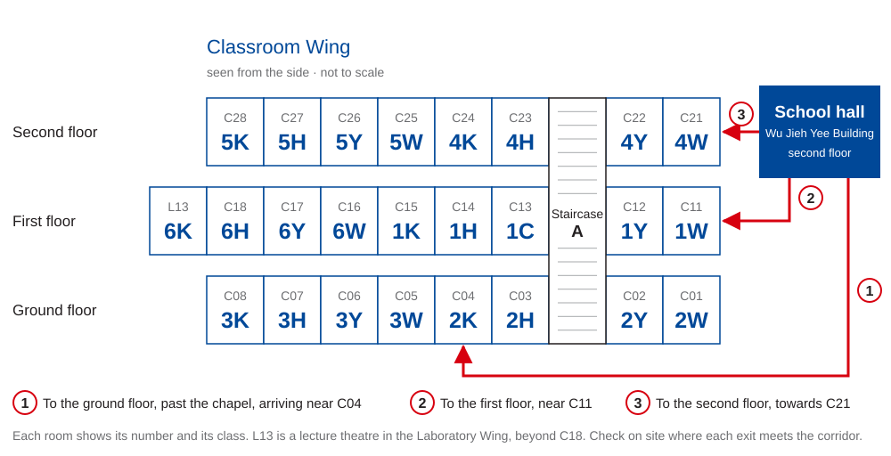

One of these has never been set in a modelling competition. Which?
On three, everyone say a letter.

Maths Team · First meeting · 19 Nov, 2026 (Thursday)
Welcome, Gentlemen.
Scroll down to begin
One of these has never been set in a modelling competition. Which?
On three, everyone say a letter.
It is C. Somebody already knows the answer to C.
Real questions. No answer key.
The other four were all set in modelling competitions between 2024 and 2026. Students your age answered them.
This team is where you learn how.
Eleven of you, in three teams. You stay in your team all year.
Sit with your team. Choose a team name. You have one minute.
The four roles of a real competition team. You hold one each week, and they rotate.
Turns the problem into mathematics, and writes down every assumption.
Finds the numbers, and builds the spreadsheet and the charts.
Makes the team's argument clear, and presents it.
Plans the time, and makes sure the parts fit together.
Share out the four roles now. Each week you move on one place, in this order.
Your team's first problem. Look around you.
How many basketballs would fill the InnoCourt?
Modeller: write down what the team assumes before anyone calculates. Then agree on one number.
Writers: tell us your team's number, and one assumption behind it.
Three teams. Three numbers. Nobody has ever filled this room. So who is right?
The team that can say what it assumed, and why that is reasonable.
That is modelling.
Which one thing would change your answer the most?
Asking this question is called sensitivity analysis. Every winning paper has one.
Now the same question, answered the way a winning team would present it. It starts by saying exactly which question it is answering.
We estimate how many full-size basketballs fit in the air space of the InnoCourt, if the balls are poured in until the room is full.
"Fill" could mean stacked neatly by hand, or poured in. We chose poured in, because that is what filling a room would really look like.
Notice: the team made a decision the question did not make for it, and said so.
Assumption 1: The room is a box.
Justification: Its walls are straight and its ceiling is flat, so length × width × height is close to its true volume.
Assumption 2: A basketball is a sphere 24 cm across.
Justification: A full-size ball is about 75 cm around, and 75 ÷ π is about 24.
Assumption 3: Poured-in balls fill 64% of the space.
Justification: Spheres dropped at random settle to about 64%. Stacking them perfectly would reach 74%.
Assumption 4: Furniture and fittings take up 10% of the room.
Justification: This is an estimate from looking at the room, so we test it later.
balls = room volume × (1 − furniture) × packing ÷ volume of one ball
We round to 2 significant figures. Our measurements are good to about 5%, so more digits would pretend to a precision we do not have.
What if each assumption is a little wrong? We change one at a time and watch the answer.
Lengths matter most, because a length is cubed: 10% on the ball or on the room moves the answer by a quarter or more. So measure those most carefully.
What made that a winning answer was not the number.
It said which question it was answering.
It gave a reason for every assumption.
It tested itself, and admitted where it is weak.
Another team could reach a different number, and be just as good.
Restate, assume, model, test, write up. That is a competition paper. The real one gives you about five days.
A real question, released to every team at once.
Assumptions, data, mathematics.
Where does it break? What changes the answer?
A paper that convinces a judge who has never met you.
One session a week, 75 minutes. Most weeks on Thursday, in the InnoCourt.
About 30 minutes on your own, from last week's session page.
A problem, your team, the real-world answer, then how a winning paper did it.
The session page stays online, to catch up or go further.
No marks. You get feedback on your thinking, from me and from each other.
Assumptions first. You did it today: write them down before you calculate.
AI is a teammate, never the author. No AI for the first four sessions. A judge wants your reasoning, and AI cannot give you that.
Every team enters every competition. The local competition is between February and April; 14 weeks assumes last year's date. The exact dates come in December.
One more thing. Your team starts a real paper today, about this school, and finishes it at Session 7.
What is the best way to dismiss the whole school from the hall?
Each week you learn one tool on a small problem, then use it on this one. Your Team Paper grows every week.
Before Session 1: at the assembly on 25 Nov, watch the dismissal. Write down three things that slow it down.

Every class goes back to its own room. You may change the seating, the exits each class uses, and the order of leaving.
Next Thursday · Session 1
No right answer
A taxi, the fastest man alive, and a relay team that should not be that fast.
Bring a charged device, a notebook, and your three things from the hall.
Questions?